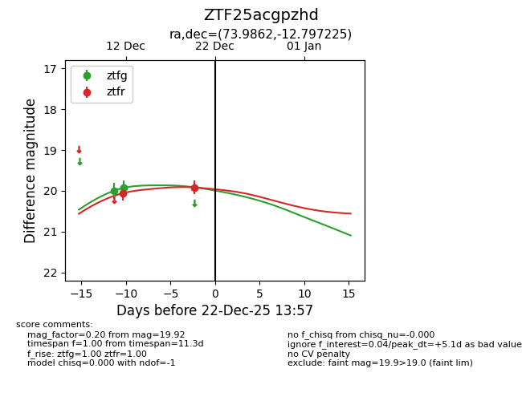
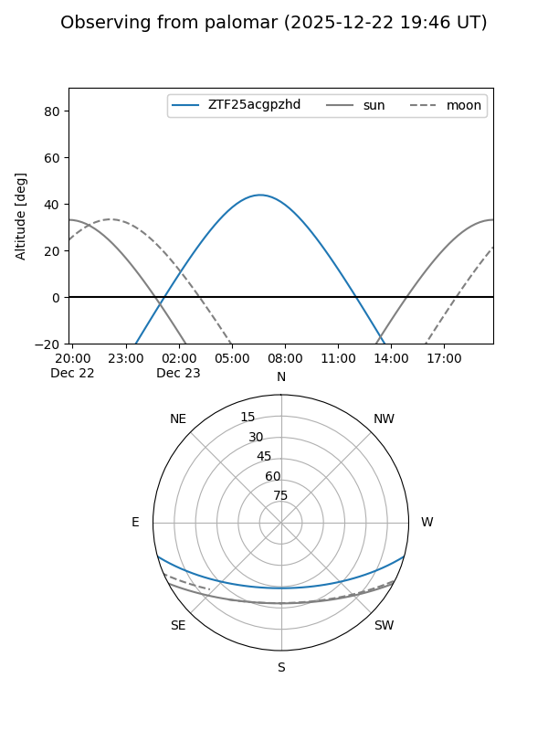
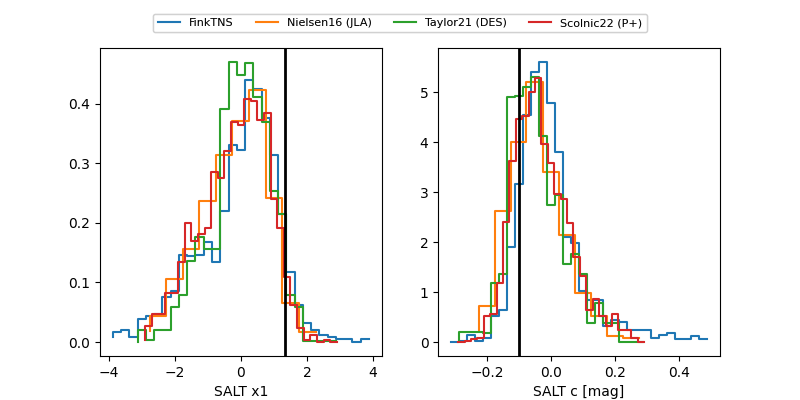

ZTF25acgpzhd
Target ZTF25acgpzhd at 2025-12-22 17:26
Aliases and brokers:
FINK: fink-portal.org/ZTF25acgpzhd
Lasair: lasair-ztf.lsst.ac.uk/objects/ZTF25acgpzhd
ALeRCE: alerce.online/object/ZTF25acgpzhd
alt names
ZTF25acgpzhd (ztf,fink_ztf)
Coordinates:
equatorial (ra, dec) = 73.9862,-12.79723
equatorial (HMS+DMS) = 04:55:56.70,-12:47:50.01
galactic (l, b) = (211.7526,-31.33746)
Flags:
Photometry:
last ztfg=20.13, ztfr=20.04
3 ztfg, 3 ztfr detections
Lightcurve

Visibility


Additional plots
